neovida.ai / ИИ. Новая реальность
Агентный подход
Автоматизация на максималках
Офлайн поток 2 · Занятие 7 · 14 мая 2026
Мы прошли шесть занятий. Сегодня — седьмое
Занятие 1
Погружение
Навигатор по ИИ
Занятие 2
Промпт-инженерия
Как думать с ИИ
Занятие 3
Ассистенты
Gems, NotebookLM
Занятие 4
Google Workspace
Canvas, Deep Research
Занятие 5
Данные
Аналитика, прогнозы
Занятие 6
Визуал
Презентации, картинки
Занятие 7 — сегодня
Агентный подход
Автоматизация на максималках
Занятие 8
Стратегия
ИИ как рычаг роста
Раньше вы писали запросы ИИ. Сегодня вы научитесь ставить ему цели — и он будет делать всё сам.
Было → Стало
Раньше: ты пишешь запрос → ИИ пишет ответ.
Дальше действуешь ты сам.
Теперь: ты ставишь цель → ИИ сам планирует, действует, проверяет себя и приносит результат.
Дальше действуешь ты сам.
Теперь: ты ставишь цель → ИИ сам планирует, действует, проверяет себя и приносит результат.
Это и есть агент. Не чат. Не ассистент. Сотрудник с KPI.
Три разные вещи — часто путают
Если не различать — будешь пробовать не тот инструмент и разочаруешься
1
Бот
Кнопки. Сценарий
Жёсткая логика: если А → ответ Б.
Не думает, не понимает. Просто выполняет то, что в него прописано.
Пример: меню в Telegram-боте
Не думает, не понимает. Просто выполняет то, что в него прописано.
Пример: меню в Telegram-боте
2
Ассистент
Интеллект. 1 задача
Понимает контекст и работает с базой знаний.
Отвечает умно на одну задачу: продажи, поддержка, помощь.
Пример: GPTs, Gems, Claude Projects — кастомные чат-боты внутри ChatGPT, Gemini и Claude (как на уроке 3).
Отвечает умно на одну задачу: продажи, поддержка, помощь.
Пример: GPTs, Gems, Claude Projects — кастомные чат-боты внутри ChatGPT, Gemini и Claude (как на уроке 3).
3
Агент
Цель. Много шагов. Сам
Ты задаёшь цель — он сам выбирает шаги, использует инструменты, действует во внешнем мире.
Пример: Manus собирает отчёт, пишет письмо, отправляет
Пример: Manus собирает отчёт, пишет письмо, отправляет
Что такое агент — формально
Определение
Агент — это несколько LLM-моделей под капотом и оболочка из инструментов, памяти, планировщика и скиллов, которая сама планирует и выполняет многошаговые задачи.
LLM (Large Language Model) — большая языковая модель, «мозг» ИИ. Это ChatGPT, Claude, Gemini и подобные.
Это не «умный чат». Это исполнитель — как сотрудник, которому ставят KPI (цель, по которой его оценивают).
Агент под капотом
Оболочка агента — что делает его «умным исполнителем»
Планировщик
Разбивает цель на шаги
Память
Помнит контекст и факты
Инструменты
Браузер, почта, API, файлы
Скиллы
Готовые навыки и сценарии
↓ использует ↓
Мозг агента — LLM-модели (большие языковые модели, часто несколько сразу)
Claude
от Anthropic
GPT-5
от OpenAI (ChatGPT)
Gemini
от Google
DeepSeek
из Китая
Запомните эту схему — к ней мы вернёмся в конце урока
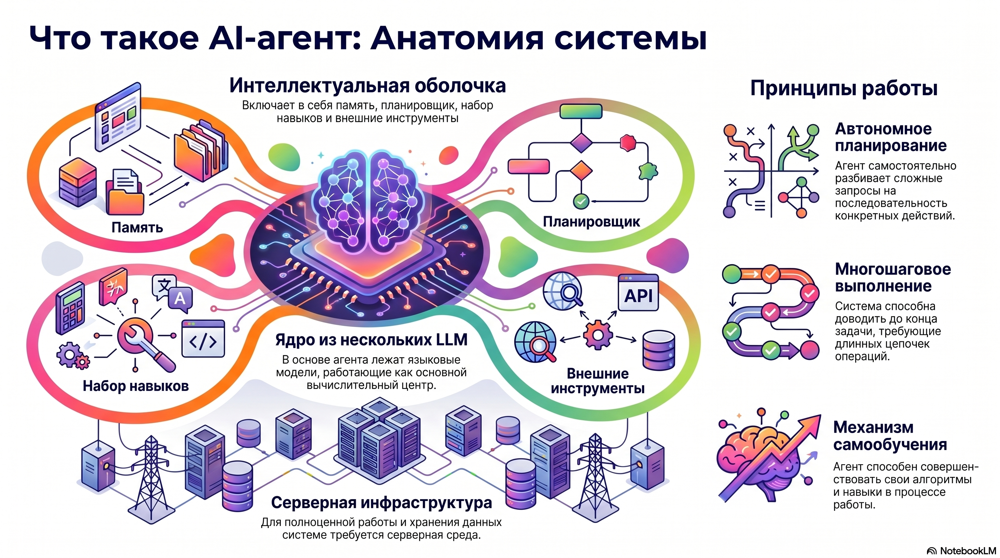
Инфографика: «Что такое AI-агент — Анатомия системы». Память, планировщик, навыки, внешние инструменты — всё вокруг ядра из нескольких LLM.
Программа на сегодня
Пройдём эволюцию агентов, сделаем 3 практики и увидим верхушку
Теория
• Бот / ассистент / агент
• Агент под капотом
• 7 этапов эволюции
• Риски и ловушки
• Агент под капотом
• 7 этапов эволюции
• Риски и ловушки
3 практики
• Suvvy — свой агент-продажник
• Manus — автономный исполнитель
• Браузерный агент — Comet / Atlas
• Manus — автономный исполнитель
• Браузерный агент — Comet / Atlas
Верхушка
OpenClaw — open-source агент на своём сервере.
Покажу свой, живьём, в Telegram.
Покажу свой, живьём, в Telegram.
Фраза, которую унесёте с урока: «Оркестрация — это новый код».
Оркестрация — управление несколькими исполнителями так, чтобы они работали вместе как один организм.
Оркестрация — управление несколькими исполнителями так, чтобы они работали вместе как один организм.
Эволюция агентов — 7 этапов
От простых пайплайнов 2022 года до open-source self-host в феврале 2026
1
2022-24
No-code
пайплайны
пайплайны
n8n, Make, Zapier
2
2024-25
Коммерч.
конструкторы
конструкторы
Suvvy, Nextbot
3
2025
Автономные
агенты
агенты
Manus, Genspark
4
2025
Браузерные
агенты
агенты
Comet, Atlas
5
2025-26
Внутри
LLM
LLM
Kimi Swarm, GPT-5
6
2026
LLM —
конструктор
конструктор
Claude Code
7
фев 2026
Open-source
self-host
self-host
OpenClaw
Слова, которые встретятся дальше — запомним сразу
No-code
Без программирования. Собираешь мышкой, не пишешь код.
Пайплайн
Цепочка действий. Как конвейер: шаг 1 → шаг 2 → шаг 3.
Open-source
Открытый код. Программа бесплатна, её можно изменять.
Self-host
На своём сервере. Не в облаке провайдера — у тебя дома.
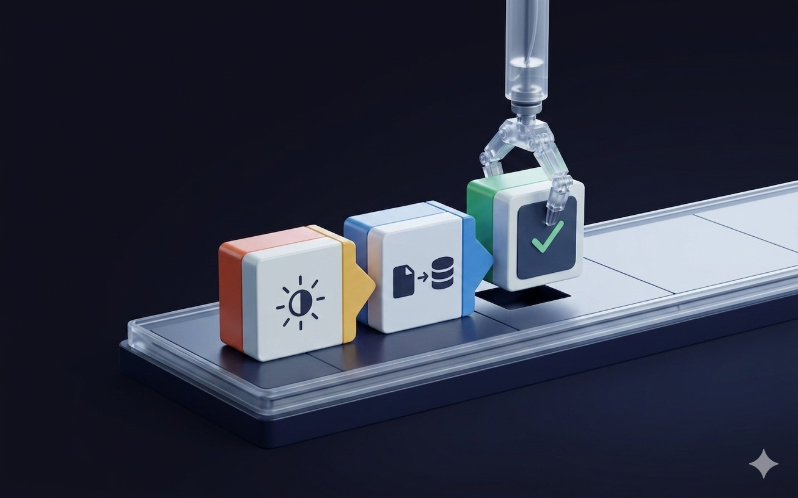
Этап 1 · 2022-2024
No-code пайплайны
Собираешь цепочку «если А → тогда Б» из готовых блоков — без программирования
С этого всё начиналось. Не ИИ, не интеллект — просто конструктор связок между сервисами.
No-code = без кода. Пайплайн = цепочка действий, как конвейер на заводе.
No-code = без кода. Пайплайн = цепочка действий, как конвейер на заводе.
Этап 1 — старая школа
Три сервиса, на которых держалась автоматизация до эпохи ИИ-агентов
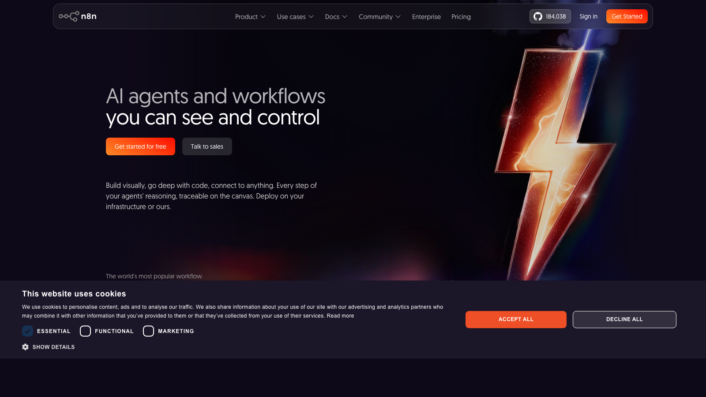
n8n
Бесплатный, ставится на свой сервер. Можно строить сложные цепочки с условиями и повторами.
n8n.io ↗
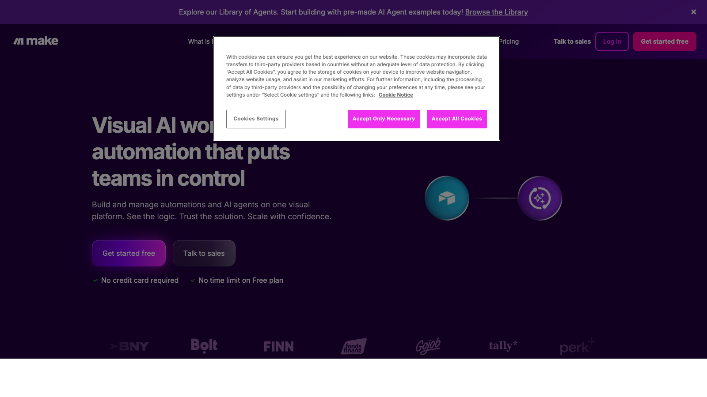
Make
Визуальный редактор: тащишь блоки мышкой, соединяешь линиями. Платный, но очень понятный.
make.com ↗
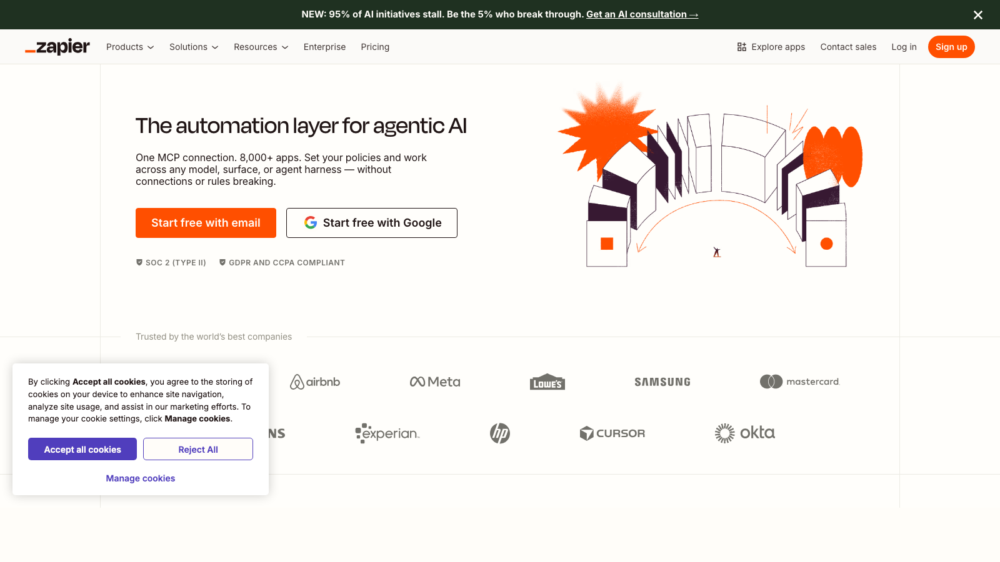
Zapier
Самый известный. Тысячи готовых связок: «если заявка в форме → отправь письмо».
zapier.com ↗
Что тут не так для 2026
Нет интеллекта. Любое «подумай» или «пойми клиента» — невозможно. Только жёсткие правила. Всё, что не предусмотрено — ломается.
Вот так выглядел n8n без ИИ
Длинная цепочка: каждый блок — жёсткое правило. Ни один не думает — только выполняет
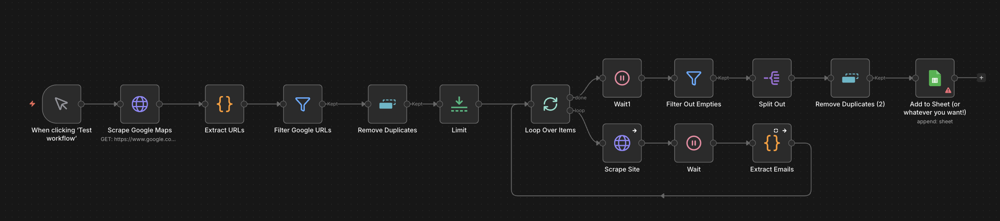
Спарси Google Maps
→
Извлеки ссылки
→
Убери дубли
→
Зайди на сайт
→
Найди email
→
В таблицу
14 блоков подряд. Каждый делает ровно одну операцию. Если клиент написал с ошибкой — всё сломается. Мозга нет.
2023-2024 · Переломный момент
Появился недостающий компонент
OpenAI открыл API (возможность подключения) — и старые платформы получили «мозг»
Было
«Если А → делай Б»
Жёсткие правила. Не понимает контекст.
Жёсткие правила. Не понимает контекст.
→
Стало
«Пойми клиента → ответь осмысленно»
Интеллект. Контекст. Анализ.
Интеллект. Контекст. Анализ.
n8n
Было: цепочки «если-то»
+ AI-ноды
Теперь в цепочку можно вставить LLM-блок — и бот понимает клиента
Make
Было: визуальные связки
+ AI-модули
Модуль ChatGPT / Claude прямо в сценарии — анализ, генерация, классификация
Zapier
Было: тысячи интеграций
+ AI-действия
AI-шаг в любом сценарии — «проанализируй заявку и реши, кому её отправить»
В старых платформах тоже можно делать агентов — потому что теперь там есть LLM-блок. Но следом появились платформы, изначально построенные вокруг ИИ ↓
Вот так теперь выглядит n8n с мозгом
AI Agent + LLM-модель + память + база знаний — всё в одном сценарии
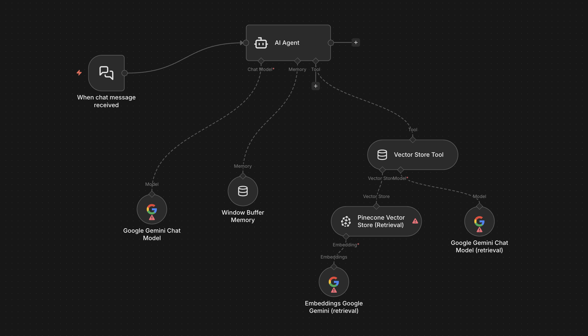
Каждая нода = код
Каждый кружок на схеме — это кусок кода, в котором прописано, как он взаимодействует с другими. Здесь вы собираете это мышкой. Но под капотом — код.
А на этапе 6...
Claude Code сам пишет все эти ноды — без визуального конструктора. Вы описываете словами → он создаёт весь сценарий кодом.
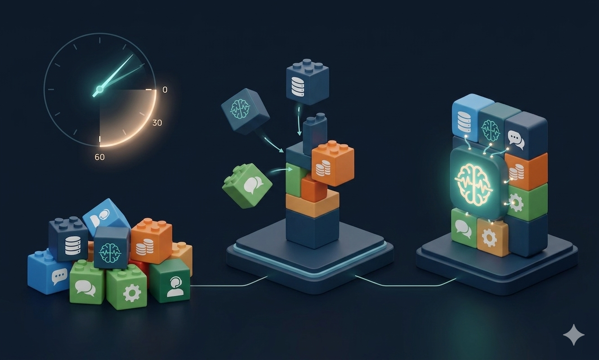
Этап 2 · 2024-2025
Коммерческие
конструкторы
конструкторы
Готовые платформы: собрать агента-продажника за час — без кода, без серверов
В отличие от n8n — здесь уже есть интеллект на базе LLM. Не «если-то», а понимание клиента.
Этап 2 — коммерч. конструкторы
Российские и международные. Общее: интеграции с мессенджерами + CRM (системой клиентов) + готовый движок
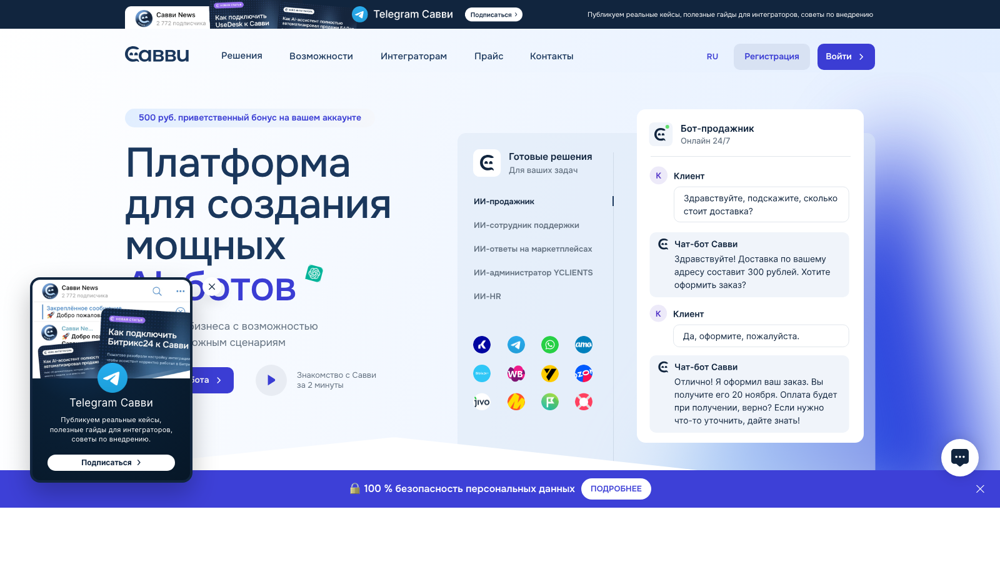
Suvvy
Российская. Продажи, саппорт, HR, маркетплейсы. Подключается к Telegram, WhatsApp, amoCRM, Bitrix.
suvvy.ai ↗
РФ
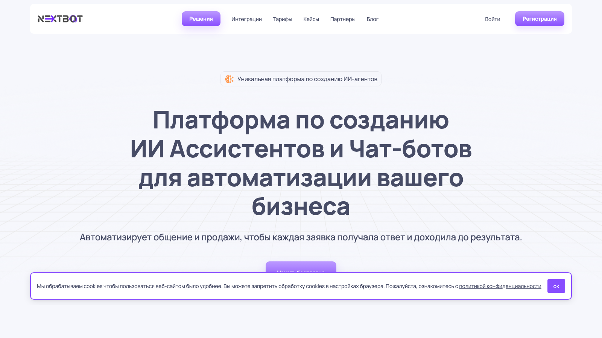
Nextbot
Российская на базе ChatGPT. Боты под любую нишу, база знаний, 5 агентов в базовом тарифе.
nextbot.ru ↗
РФ
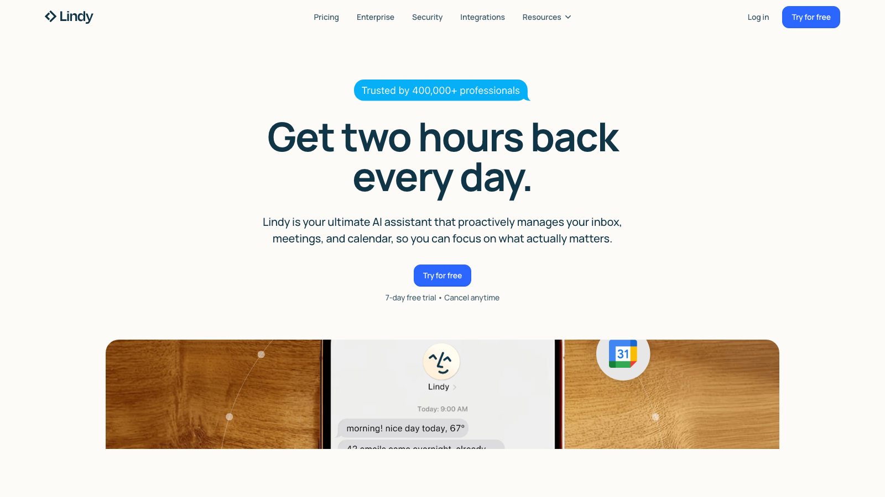
Lindy
Международная. Автоматизация почты, календаря, найма. Тесно связана с сервисами Google.
lindy.ai ↗
глобал
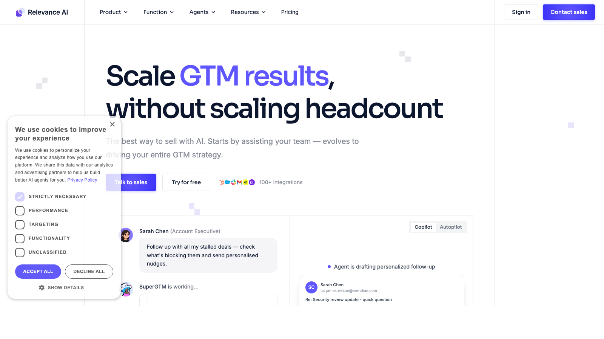
Relevance AI
Для крупных компаний. Команды агентов с ролями, подключение к корпоративным системам.
relevanceai.com ↗
глобал
Чем отличается от этапа 1
Под капотом — LLM (языковая модель, «мозг» ИИ). Агент понимает запрос с ошибками, контекст диалога, эмоции клиента. Уже не «если-то», а осмысленный ответ.
Практика №1 · 25 минут
Делаем своего агента
в Suvvy
в Suvvy
Агент-консультант для вашей сферы. От регистрации до первого ответа клиенту в Telegram — вместе, шаг за шагом.
Откройте suvvy.ai у себя или просто следите за демонстрацией на экране
ПРАКТИКАЧто нам понадобится
Перед стартом — 3 вещи. Подготовим за 2 минуты.
1. Ниша бизнеса
Одним предложением, чем занимаетесь.
Пример: «мини-отель», «сервисный центр оргтехники» или «производство противопожарных дверей».
Пример: «мини-отель», «сервисный центр оргтехники» или «производство противопожарных дверей».
2. База знаний
Прайс, FAQ (частые вопросы-ответы) или текст сайта. Можно кратко, в 3-5 абзацах.
Агент будет отвечать клиентам на основе этого.
Агент будет отвечать клиентам на основе этого.
3. Цель агента
Что он должен делать?
Например: «Квалифицировать клиента, собрать задачу, бюджет и срок, затем передать заявку менеджеру».
Например: «Квалифицировать клиента, собрать задачу, бюджет и срок, затем передать заявку менеджеру».
У кого нет готовой ниши — берите условную. Главное сегодня — пройти весь путь создания от и до.
ШАГИ 1-4Создание и базовая настройка
1
Открываем suvvy.ai → кнопка «Попробовать бесплатно». Регистрация через email.
2
В дашборде → «Создать агента» → выбираем шаблон «Продажник».
3
Даём агенту имя и роль. Пример: «Алия, менеджер мини-отеля».
4
Загружаем базу знаний: вставляем текст о бизнесе, прайс, ФАК. Suvvy сам индексирует.
На экране — живая работа. Повторяем вместе, не спешим.
ШАГИ 5-8Логика и первая проверка
5
Раздел «Сценарии» → описываем цель: «Квалифицируй клиента, собери 3 параметра: задача, бюджет, срок. Предложи звонок, бронь или замер».
6
Подключаем к Telegram: создаём своего бота через @BotFather (официальный бот Telegram для создания других ботов — команда
/newbot), копируем токен (секретный ключ-пароль) и вставляем в Suvvy.
7
Тест в песочнице (встроенная тестовая чат-зона Suvvy): пишем «Здравствуйте, подберёте вариант под мою задачу и сориентируете по цене?». Смотрим ответ агента.
8
Если ответ плохой — правим базу знаний или инструкцию агенту. Это и есть главная работа: тюнинг (донастройка под себя).
Цель практики: ваш агент отвечает в Telegram на вопрос клиента. Это уже рабочий прототип.
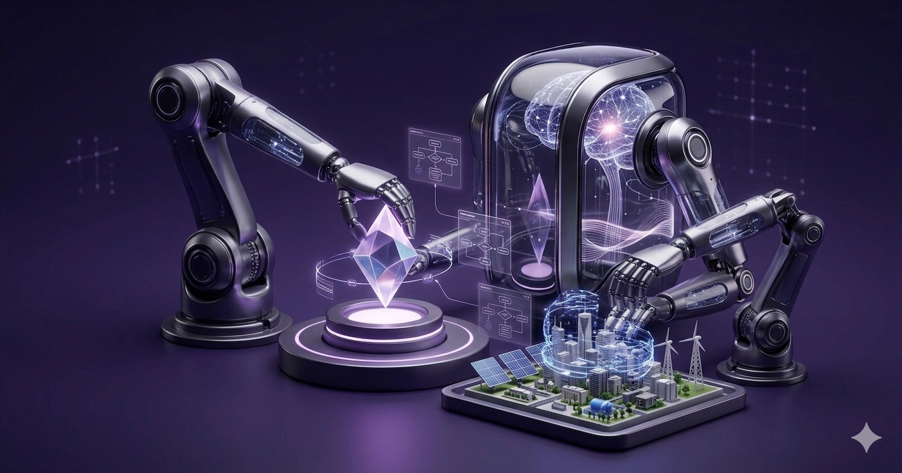
Этап 3 · 2025
Автономные агенты
Не ты собираешь — он сам решает, что делать. Ты даёшь цель — он приносит результат.
В отличие от конструкторов (этап 2) — здесь ничего не нужно собирать. Агент сам планирует шаги и выполняет их.
Чем Manus отличается от обычного ChatGPT
Важный момент: любую LLM можно попросить «собери отчёт» — но это не то же самое. Смотри разницу:
Обычный чат (LLM)
Говорит,
но не действует
но не действует
ChatGPT, Claude, DeepSeek, Gemini.
• Напишет текст-ответ в чате
• Может описать, как искать данные
• Не откроет сайты за тебя
• Не создаст файл (Excel, PDF)
• Не запустит код
Результат = текст в окне чата. Дальше ты всё делаешь руками.
• Напишет текст-ответ в чате
• Может описать, как искать данные
• Не откроет сайты за тебя
• Не создаст файл (Excel, PDF)
• Не запустит код
Результат = текст в окне чата. Дальше ты всё делаешь руками.
⇒
Автономный агент (Manus)
Действует и приносит
готовый продукт
готовый продукт
У Manus есть виртуальный компьютер. Внутри него агент:
• Открывает браузер, заходит на сайты
• Пишет код и сам его запускает
• Создаёт файлы: .xlsx, .pdf, готовый сайт
• Собирает рабочие приложения целиком
Результат = скачиваемый продукт. Готовый сайт, отчёт в Excel, работающий Telegram-бот.
• Открывает браузер, заходит на сайты
• Пишет код и сам его запускает
• Создаёт файлы: .xlsx, .pdf, готовый сайт
• Собирает рабочие приложения целиком
Результат = скачиваемый продукт. Готовый сайт, отчёт в Excel, работающий Telegram-бот.
Коротко: LLM — советчик, который объясняет словами. Manus — исполнитель, который делает руками и отдаёт тебе готовый файл.
Этап 3 — кто это умеет
Главный игрок + три конкурента
Manus
Автономный агент: сам открывает браузер, пишет код, приносит результат. Работает как исполнитель для исследований, файлов и быстрых прототипов.
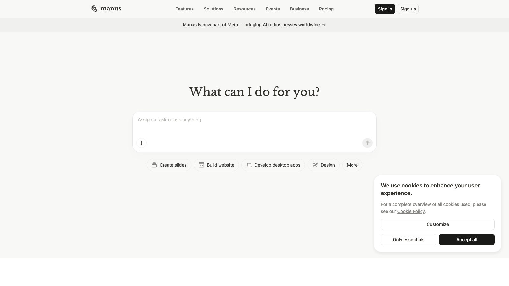
• Глубокий анализ рынка • Собирает сайты (Web App Builder) • Сам создаёт агентов для Telegram • Виртуальный компьютер
manus.im ↗
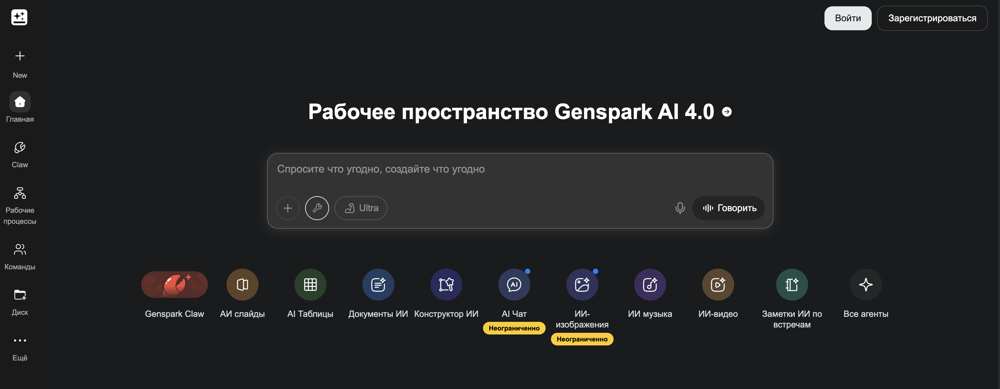
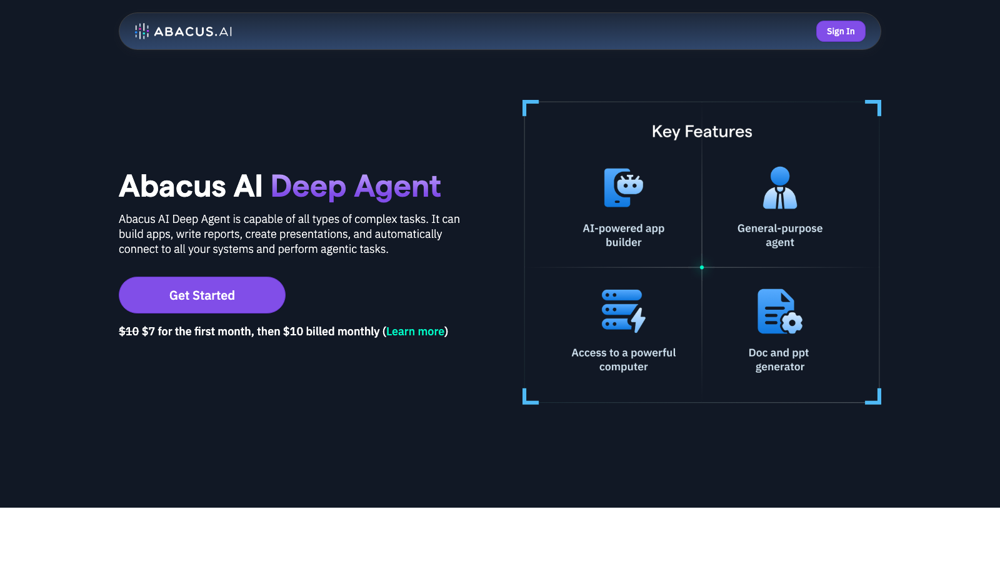
DeepAgent
Создаёт Telegram-ботов, генерирует дашборды.
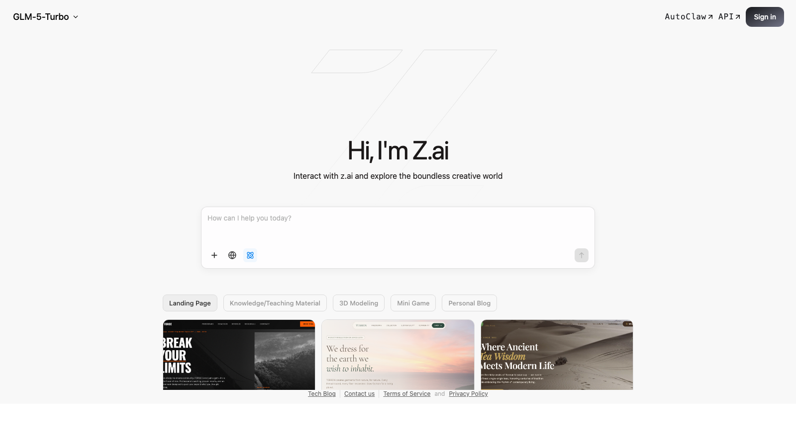
Китайские: GLM, Doubao
GLM (z.ai) — работает из РФ без VPN. Doubao — от ByteDance.
Самое странное открытие 2026
Автономные агенты научились создавать других агентов
Ты
даёшь цель
→
Manus
(агент) берёт в работу
(агент) берёт в работу
→
Создаёт
Telegram-бота
(ещё один агент) под твою задачу
Telegram-бота
(ещё один агент) под твою задачу
→
Готовый
Telegram-бот работает без тебя
Telegram-бот работает без тебя
Ты один раз попросил — получил двух новых сотрудников: Manus, который подумал, и Telegram-бота, который теперь отвечает клиентам.
Лимиты Manus
Перед практикой проверяем текущий тариф и начинаем с маленькой задачи
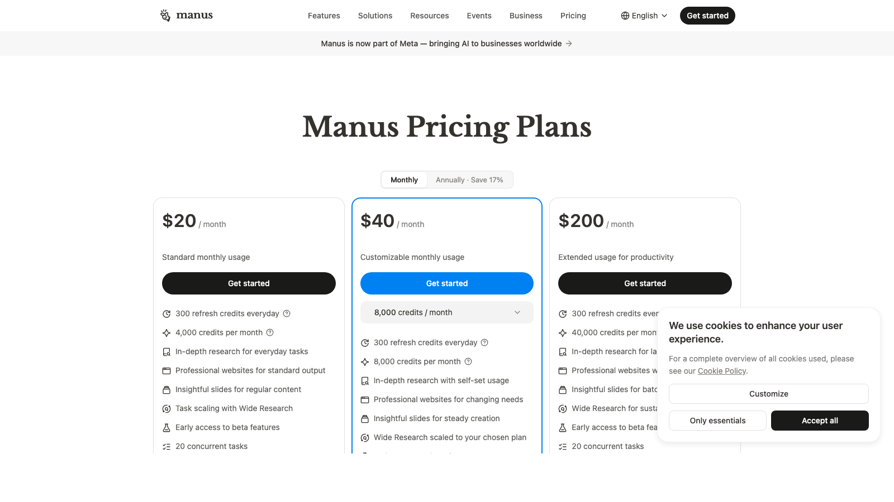
Free Бесплатно
В бесплатном режиме есть стартовые кредиты.
Хватает на тест, но не на длинные цепочки.
Хватает на тест, но не на длинные цепочки.
Платные уровни
Для регулярной работы: больше лимитов, параллельные задачи, API-доступ (подключение из других сервисов).
Командные уровни
Для команд и больших проектов: больше лимитов, массовая генерация, приоритетные серверы.
Важный нюанс
Лимиты и цены меняются. Перед запуском проверьте текущий тариф в аккаунте. Чем длиннее цепочка действий, тем быстрее расходуются кредиты.
Практика №2 · 10 минут
Запускаем Manus
на живой задаче
на живой задаче
Я даю Manus одну фразу — мы смотрим, как он открывает браузер, ищет, читает, анализирует и приносит готовый отчёт.
Смотрим демонстрацию на экране; кто успевает — повторяет у себя
ПРАКТИКАДелаем вместе в Manus
Я показываю на экране — вы повторяете у себя или забираете шаги в шпаргалку. Начинаем с маленькой задачи.
1
Открываем manus.im → регистрация через Google. Проверяем текущий лимит в аккаунте перед запуском.
2
В поле ввода пишем задачу одной фразой. Например:
«Найди 5 конкурентов в моей нише и городе. Собери цены, сроки, отзывы и сильные стороны. Сделай сравнительную таблицу в Excel.»
«Найди 5 конкурентов в моей нише и городе. Собери цены, сроки, отзывы и сильные стороны. Сделай сравнительную таблицу в Excel.»
3
Наблюдаем: Manus сам открывает браузер, заходит на сайты, читает страницы, копирует данные. Вы видите каждый шаг — его «мысли» в реальном времени.
4
Скачиваем результат: Manus отдаёт готовый файл (Excel, PDF или даже мини-сайт). Это не текст в чате — это файл, который можно открыть и использовать.
Начинайте с маленькой задачи — одна сложная цепочка может быстро съесть доступный лимит.
ПРОМПТЫВыберите свой — впишите свою компанию
Скопируйте подходящий промпт, замените [...] на свои данные и вставьте в Manus
Анализ конкурентов
«Найди 5 компаний по [моя ниша] в [мой город]. Собери цены, отзывы, сроки. Сделай сравнительную таблицу в Excel и дай рекомендацию.»
Исследование рынка
«Проведи исследование рынка [моя ниша] в России. Тренды 2026, объём рынка, топ-10 игроков, средний чек. Сделай PDF-отчёт.»
Контент-план
«Составь контент-план на месяц для Telegram-канала или ВКонтакте компании [моя компания]. 20 публикаций: темы, заголовки, офферы, формат. Сделай таблицу в Excel.»
Коммерческое предложение
«Создай коммерческое предложение для компании [моя компания]. Услуги: [перечень]. Клиент: [тип клиента]. Сделай красивый PDF.»
Мини-сайт
«Собери одностраничный сайт-визитку для [моя компания]. О нас, услуги, цены, контакты. Стиль минималистичный. Дай ссылку.»
Создать Telegram-бота
«Создай Telegram-бота для [моя компания], который отвечает по базе знаний, квалифицирует заявку и передаёт контакт менеджеру.»
Выберите один промпт, впишите свою компанию — и запустите. Через 5 минут у вас будет готовый результат в файле.
Manus vs ChatGPT — в чём реальная разница
ChatGPT тоже может «собрать отчёт по конкурентам». Но результат — разный:
ChatGPT / Gemini
• Даст текст в чате — копируй сам
• Не создаст Excel / PDF / сайт
• Не зайдёт на сайты конкурентов реально
• Не запустит код и не проверит результат
• Всё в рамках одного окна чата
• Не создаст Excel / PDF / сайт
• Не зайдёт на сайты конкурентов реально
• Не запустит код и не проверит результат
• Всё в рамках одного окна чата
Manus
• Создаёт готовые файлы: .xlsx, .pdf, .html
• Реально заходит на сайты, читает прайсы
• Может собрать рабочий сайт или приложение
• Может создать Telegram-бота с нуля
• Работает 30+ шагов автономно, не спрашивая
• Реально заходит на сайты, читает прайсы
• Может собрать рабочий сайт или приложение
• Может создать Telegram-бота с нуля
• Работает 30+ шагов автономно, не спрашивая
Простая аналогия
ChatGPT — это консультант, который объясняет что делать. Manus — это подрядчик, который берёт задачу и приносит готовый результат в файле. Платишь больше — но получаешь продукт, а не текст.
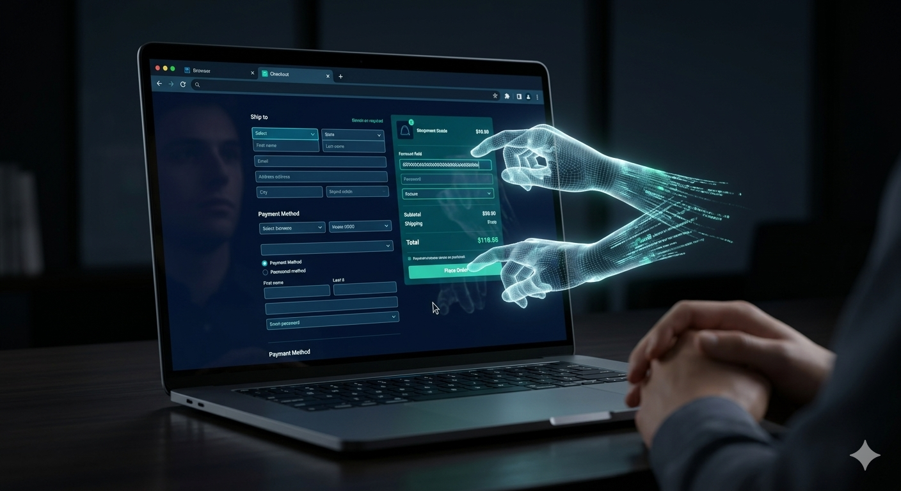
Этап 4 · 2025
Браузерные
агенты
агенты
Агент живёт в твоём браузере и сам кликает, заполняет формы, ищет, покупает — вместо тебя
В отличие от Manus — он не в облаке, а на твоей машине. Ты видишь каждый клик своими глазами.
Агентский браузер — что это
Представь обычный Chrome, но с «режимом автопилота» — как у Tesla на дороге
comet.perplexity.ai ■
Обычный браузер
Ты ищешь → ты читаешь → ты копируешь → ты клеишь в доку → ты пишешь.
Всё руками.
Всё руками.
Агентский браузер
Ты говоришь: «Сравни 5 отелей в Сочи, выбери лучший, забронируй».
Браузер открывает вкладки, читает, заполняет формы — сам.
Браузер открывает вкладки, читает, заполняет формы — сам.
Этап 4 — кто играет на этом поле
Все 4 вышли во второй половине 2025. Сначала посмотрим как они выглядят — потом разберём принцип.
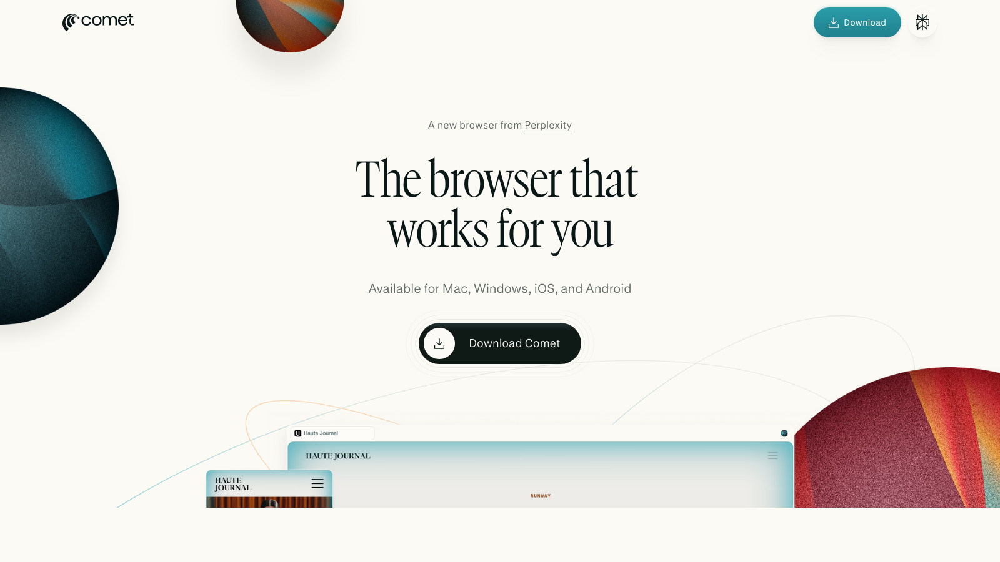
1. Perplexity Comet
Июль 2025. От создателей Perplexity. Глубокий поиск, ресёрч, понимание контента. Сегодня покажу именно его.
comet.perplexity.ai ↗
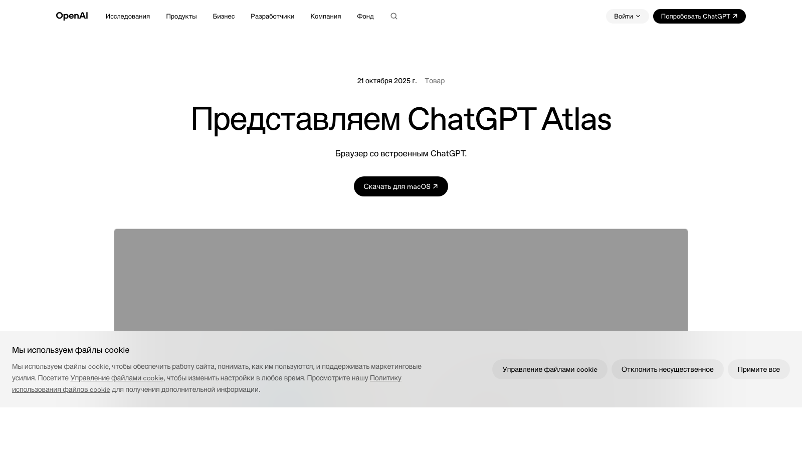
2. ChatGPT Atlas
Октябрь 2025. От OpenAI. Фокус на задачах по цепочке: заполни форму, купи, забронируй.
chatgpt.com/atlas ↗
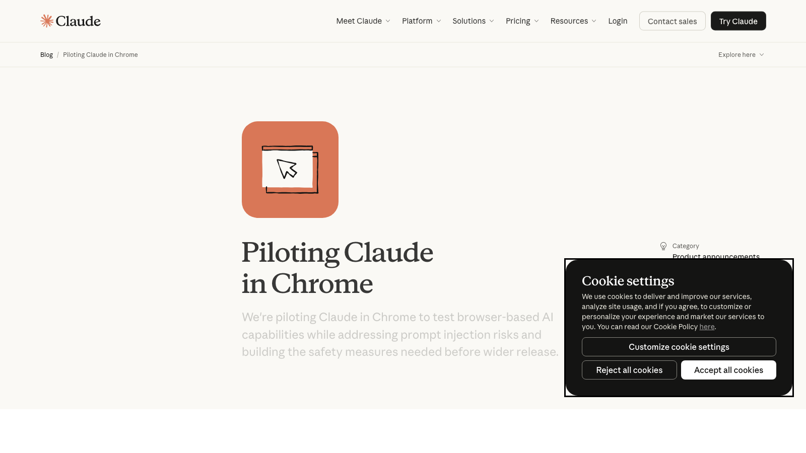
3. Claude Browser
Ноябрь 2025. Расширение от Anthropic. Claude управляет активной вкладкой — как «пилот».
anthropic.com ↗
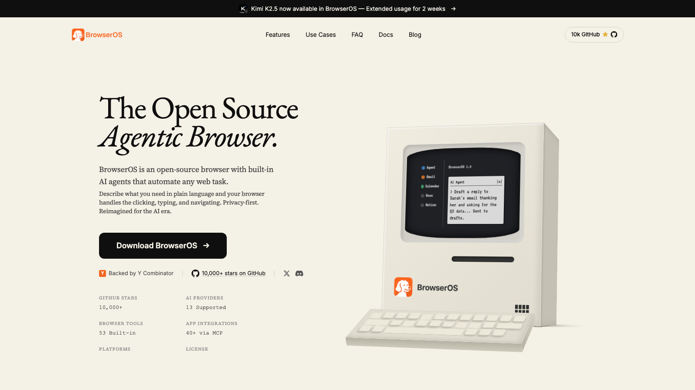
4. BrowserOS
2026. Open-source (бесплатный, открытый код): ставится локально, подключаешь свою LLM.
browseros.com ↗
Общий принцип — все 4 работают одинаково
Разберём на примере Comet. У Atlas, Claude и BrowserOS — тот же принцип, разный интерфейс.
1. Говоришь
Задача словами
«Найди 5 отелей в Сочи до 5000₽ с рейтингом 8+».
2. Он видит
Читает твой экран
Агент анализирует активную вкладку, понимает что на странице.
3. Кликает
Управляет мышкой
Открывает вкладки, заполняет формы, прокручивает, копирует — как человек.
4. Ты видишь
Каждый шаг — на экране
Можешь в любой момент вмешаться: остановить, поправить, продолжить.
Зачем это вообще нужно
Обычный ChatGPT даёт текст-ответ. Manus работает в своём облаке — ты не видишь процесс. Браузерный агент — твой напарник за тем же экраном. Это идеальный вариант для задач, где важно видеть что происходит и сохранить контроль.
Разбор Perplexity Comet подробно
Почему именно Comet — а не Atlas. И что у него есть, чего нет у других.
Главные фишки Comet
• Глубокий ресёрч — читает десятки источников и сводит в один ответ
• Понимает контекст страницы — выделил абзац в статье, спросил — получил пояснение
• Работает в любой вкладке — не надо уходить из Gmail/Notion/соцсетей
• Бесплатный уровень есть — попробовать без карты
• Доступен на Mac, Windows, iOS, Android — везде одинаково
• Понимает контекст страницы — выделил абзац в статье, спросил — получил пояснение
• Работает в любой вкладке — не надо уходить из Gmail/Notion/соцсетей
• Бесплатный уровень есть — попробовать без карты
• Доступен на Mac, Windows, iOS, Android — везде одинаково
Как выглядит
comet.perplexity.ai — «The browser that works for you»
Perplexity — три уровня агентности
Один бренд, три продукта — каждый следующий умеет больше
Free Comet — бесплатно
AI-браузер. Кликает по вашим командам: «открой ссылку», «прокрути к ценам». Суммаризирует страницы. Отвечает на вопросы по контенту.
5 Deep Research запросов в день.
5 Deep Research запросов в день.
Pro / платный уровень
Всё из бесплатного + агент управляет браузером: заполняет формы, сравнивает товары в разных вкладках, ищет лучшие цены, оформляет покупки. Multi-step (многошаговые цепочки).
Computer / продвинутый уровень
Полный автопилот. Подключает несколько сильных моделей, видит экран, кликает мышкой, печатает. Даёшь цель → уходишь → приносит результат.
Для практики сегодня используем бесплатный Comet — его уже хватает, чтобы увидеть разницу. Платные уровни подключают, когда нужен более глубокий браузерный агент.
Практика №3 · 8 минут
Даю задачу Comet
Смотрим, как Comet сам открывает сайты, читает и собирает результат — прямо в браузере.
Демо на экране: можно повторять параллельно или вернуться к шагам после занятия
ПРАКТИКАДелаем вместе в Comet
Comet — бесплатный AI-браузер. Он умеет кликать, открывать ссылки и навигировать по вашим командам.
1
Скачиваем Comet (Mac/Win/iOS/Android) — бесплатно, без карты. Открываем.
2
Говорим Comet: «Открой сайт сервиса из моей ниши, найди раздел с тарифами, прокрути к ценам» — он сам кликает, открывает, прокручивает.
3
Выделяем блок с ценами на странице → спрашиваем: «Какой тариф подойдёт новичку и почему?» — Comet анализирует контент и отвечает в панели сбоку.
4
Нажимаем «Summarize page» — Comet суммаризирует всю страницу за 5 секунд. Работает на любом сайте.
Бесплатного режима хватает для демонстрации. В платных уровнях Comet умеет глубже работать с формами, вкладками и многошаговыми задачами.
Этапы 5 и 6
Агенты внутри LLM
+ LLM как конструктор
+ LLM как конструктор
Два этапа одним блоком — здесь не нужно ничего нового устанавливать
Этап 5 — агенты внутри LLM
У самой модели есть «кнопка Agent». Не отдельный сервис — а режим в привычном ChatGPT или Kimi.
Kimi K2.5 Agent Swarm
Модель от Moonshot AI (Китай). Режим Agent Swarm (рой агентов) — запускает до 100 sub-agents параллельно. Ускорение 4.5x по сравнению с одиночным.
kimi.com/ai-models/kimi-k2-5
kimi.com/ai-models/kimi-k2-5
ChatGPT Agent Mode (GPT-5)
Встроенный в GPT-5. ChatGPT сам вызывает инструменты: ищет в интернете, пишет код, генерирует картинки, создаёт файлы — внутри одного чата, без отдельного сервиса.
+ Gemini Agent (Google) / Qwen Agent (Alibaba)
+ Gemini Agent (Google) / Qwen Agent (Alibaba)
Чем это отличается от Manus
Manus — отдельный сервис, в который ты идёшь специально. Агенты внутри LLM — это «кнопка Agent» в привычном ChatGPT/Kimi, который ты и так используешь каждый день.
Этап 6a — агенты-кодеры. Два вида
Тут легко запутаться. Поэтому разделим сразу на две полочки:
Фирменный агент
Создатель модели = создатель агента
Работает только со своей моделью. Как фирменный магазин одного бренда.
Claude Code
Агент от Anthropic. Работает на модели Claude. Живёт в терминале. Сам пишет, запускает и чинит код.
claude.ai/code ↗
ChatGPT Codex
Агент от OpenAI. Работает на модели GPT. Облачный: даёшь задачу — приходит готовый код.
openai.com/codex ↗
vs
Универсальная среда
Среда одна — модели на выбор
Подключаешь любую LLM как движок. Как торговый центр, где много брендов.
Cursor
Редактор кода с Agent Mode. Подключаешь Claude, GPT или Gemini — на выбор. Самый популярный.
cursor.com ↗
Google Antigravity
IDE от Google. Несколько агентов работают параллельно. Бесплатно для Gmail. Ноябрь 2025.
antigravity ↗
Все четыре — сами агенты. И все четыре могут создавать новых агентов — это вайбкодинг. Дальше — версия для всех ↓
Этап 6b — агенты-строители (для всех, без кода)
Тот же принцип: LLM + инструменты + планировщик. Но обёрнуто в SaaS (онлайн-сервис) — описал словами → получил готовый сайт.
Lovable
Описал приложение на русском → получил рабочий сайт с базой данных. Деплой одной кнопкой.
lovable.dev ↗
Bolt.new
Быстрый генератор лендингов и приложений. Работает прямо в браузере, можно редактировать код.
bolt.new ↗
Replit
Полноценная среда разработки в браузере. Встроенный агент пишет, запускает и деплоит код за тебя.
replit.com ↗
v0.dev
От создателей Vercel. Генерирует UI-компоненты и целые страницы по описанию. Копируешь код.
v0.dev ↗
Ага-момент
Помните, на занятии 6 вы создавали лендинги в Bolt и v0?
Так вот — вы уже пользовались агентами и не знали об этом!
Так вот — вы уже пользовались агентами и не знали об этом!
Практика №4 · 15 минут
Создаём лендинг
в Lovable
в Lovable
Скриншот чужого лендинга + ваша тема = готовый сайт за 5 минут.
Агент-строитель в деле.
Агент-строитель в деле.
Откройте lovable.dev у себя или смотрите демонстрацию на экране
ПОДГОТОВКАЧто нам понадобится
Три вещи — подготовим за 3 минуты
1. Расширение GoFullPage
Ставим за 10 секунд: Chrome → магазин расширений → GoFullPage → Установить.
Оно делает скриншот ВСЕЙ страницы — от шапки до футера, одним кликом.
Оно делает скриншот ВСЕЙ страницы — от шапки до футера, одним кликом.
2. Референс с Lapa.ninja
Открываем lapa.ninja — 5000+ красивых лендингов с фильтрами по индустрии. Выбираем понравившийся → нажимаем GoFullPage → скачается длинный скриншот.
3. Ваша тема
Одним предложением: чем занимаетесь, кто клиенты, что продаёте.
Пример: «мини-отель», «сервисный центр оргтехники» или «производство противопожарных дверей»
Пример: «мини-отель», «сервисный центр оргтехники» или «производство противопожарных дверей»
ШАГИ 1-5Создаём лендинг в Lovable
1
Открываем lovable.dev → регистрация через Google. Бесплатно, хватит кредитов на лендинг.
2
Нажимаем «Прикрепить файл» → загружаем скриншот референсного лендинга (тот длинный скриншот из GoFullPage).
3
Вставляем готовый промпт (шаблон ниже), заменяя [...] на свою тему. Нажимаем Enter.
4
Ждём 2-3 минуты — Lovable генерирует полноценный сайт. Справа — превью в реальном времени.
5
Нажимаем «Publish» → готовый сайт по ссылке. Можно отправить клиенту прямо сейчас.
ПРОМПТШаблон запроса для Lovable
Скопируйте, замените [...] на свои данные, вставьте вместе со скриншотом
Промпт — скопировать и вставить
Создай одностраничный лендинг.Бизнес: [например: мини-отель, сервисный центр оргтехники или производство противопожарных дверей]
Клиенты: [например: гости города, офисы, застройщики, b2b-клиенты]
Услуги: [например: бронирование, ремонт, производство, консультации, доставка]
Преимущества: [например: быстрый ответ, гарантия, прозрачные сроки, собственная команда]
Контакты: [телефон, город, адрес]
Используй прикреплённый скриншот как референс дизайна — повтори структуру, стиль и расположение блоков.
Блоки: шапка с заголовком и кнопкой, о компании, услуги с ценами, преимущества, отзывы, контакты с картой, футер.
Стиль: современный, минималистичный, мобильная адаптация.
Промпт + скриншот референса = Lovable понимает и что написать, и как это должно выглядеть.
Риски и ловушки агентов
Агенты — мощная штука. Но у каждой силы есть обратная сторона. Знать заранее — не попасться.
Каскадные ошибки
Агент ошибся на шаге 3 — и все следующие 10 шагов пошли по ложному пути. Чем длиннее цепочка — тем больше риск.
Бесконечные циклы
Агент застрял и пытается решить задачу снова и снова — расходует лимиты и деньги без результата. Поэтому длинные задачи запускаем маленькими итерациями.
Prompt injection
(скрытая манипуляция) Злоумышленник прячет команду на веб-странице — агент выполняет её, думая, что это часть задачи. Как «трюк» для ИИ.
Кто отвечает?
Если агент нарушил закон — кто виноват? Разработчик? Владелец? ИИ? Юридически это пока серая зона. Всегда проверяйте результат.
А теперь — мультиагентность
До этого мы говорили про одного агента, который делает задачу. Но что, если задача слишком сложная для одного?
Аналогия: компания из одного человека vs команда
Один агент — это фрилансер. Он хорош, но один. Если задача большая — он тонет.
Мультиагентная система — это компания. Директор раздаёт задачи, каждый сотрудник делает свою часть, результат собирается вместе.
Несколько агентов → каждый со своей ролью → общая цель.
Мультиагентная система — это компания. Директор раздаёт задачи, каждый сотрудник делает свою часть, результат собирается вместе.
Несколько агентов → каждый со своей ролью → общая цель.
Это именно то, что делают Kimi Agent Swarm (100 агентов параллельно), OpenClaw (несколько агентов на сервере) и Google Antigravity (Manager + Worker View).
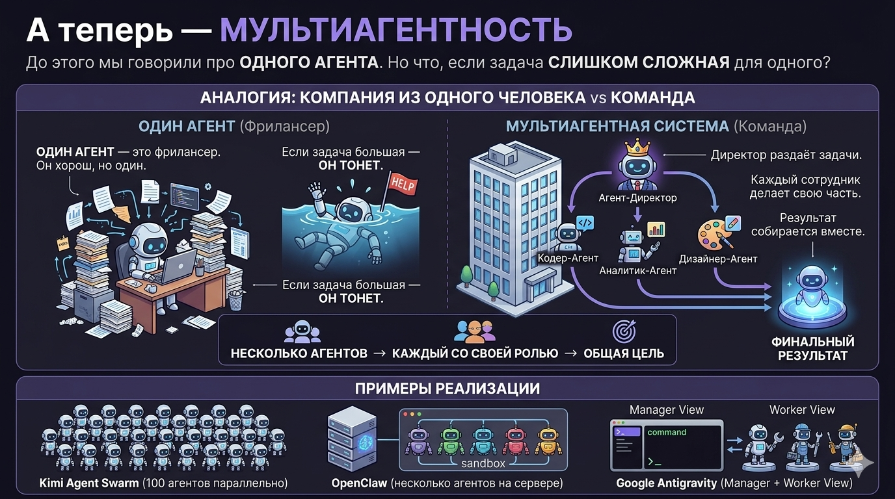
Три способа организовать команду агентов
Как в реальной компании — разные структуры подходят для разных задач
1. Директор + сотрудники
Иерархическая
Директор
↓ ↓ ↓
Аналитик
Дизайнер
Рассылка
Один агент раздаёт задачи другим, собирает результаты и отдаёт итог.
Пример: создать маркетинговую кампанию — 1 планирует, 3 делают.
2. Эстафета
Плоская / Swarm
Парсер
→
Аналитик
→
Отправка
Нет начальника. Каждый передаёт эстафету следующему: сделал своё → передал дальше.
Пример: собрать данные → проанализировать → отправить отчёт по почте.
3. Дебат
Генератор vs Критик
Создаёт
⇄
Критикует
Спорят, пока не договорятся
Два агента спорят: один предлагает, другой ищет ошибки. Итог — проверенный результат.
Пример: составить договор — юрист пишет, ревизор проверяет.
Зачем это знать
Оркестрация (управление командой агентов) — это главная компетенция 2026. Не «какую модель выбрать», а «как организовать агентов в команду». Именно это отличает тех, кто получает результат.
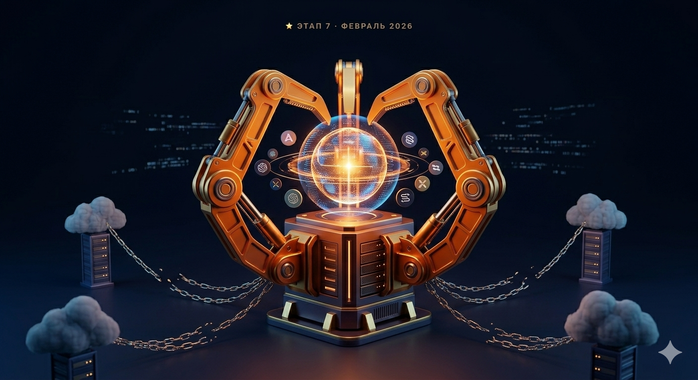
Этап 7 · Февраль 2026 · Верхушка эволюции
Open-source
self-host агенты
self-host агенты
Свой агент. На своём сервере. С любой LLM. Полный контроль. Ничего не арендуем.
Что такое OpenClaw
247 000 звёзд на GitHub. Создан в Австрии. Февраль 2026 — взорвал интернет.
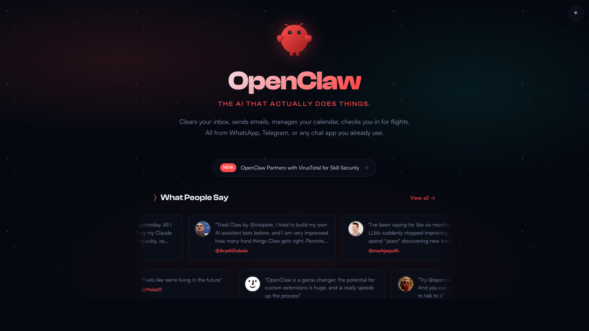
Что это
Self-hosted (на своём сервере) агентский runtime (движок). Подключается к любой LLM (Claude, GPT, DeepSeek). Общаешься через мессенджер: Telegram, Signal, WhatsApp, Discord.
Чем отличается от всего предыдущего
Suvvy, Manus, Comet — чужие серверы, чужие правила. OpenClaw — твой сервер, твои данные, твои интеграции. Никакого vendor lock-in (зависимости от одной компании).
Бесплатно
Open-source. Платишь только за сервер (~200-500 ₽/мес на Timeweb) и за LLM (API-ключ).
OpenClaw — не единственный
Есть 3-4 похожих проекта. Все — open-source, все — self-hosted.
OpenClaw
Лидер. 247k звёзд. Telegram, Signal, WhatsApp, Discord. Timeweb маркетплейс — 2 клика.
openclaw.ai ↗
NemoClaw
От NVIDIA. Тот же принцип, но с security guardrails (защитными барьерами). Для компаний.
LibreChat
Поддерживает 75+ LLM-провайдеров. Фокус на чат-интерфейсе. Open-source, Docker.
⌨
Cline
5M+ установок. Плагин для VS Code — агент прямо в редакторе кода. Для тех, кто пишет код.
Зачем нужен self-host, если есть Manus и Suvvy
Приватность: данные не уходят на чужие серверы. Контроль: можно менять LLM, добавлять свои инструменты. Бесплатно: нет подписки, только сервер + API.
Демо OpenClaw · 20 минут
Мой OpenClaw в деле
Сейчас покажу свой уже настроенный OpenClaw — живьём, в Telegram. Что он умеет, какие задачи решает, как с ним общаюсь каждый день.
Переключаюсь на Telegram — все смотрят на экран
Вспоминаем главную схему
Оболочка агента
Планировщик
Разбивает цель на шаги
Память
Помнит контекст
Инструменты
Браузер, почта, API
Скиллы
Готовые навыки
↓ использует ↓
LLM-модели
Claude
Anthropic
GPT-5
OpenAI
Gemini
Google
DeepSeek
Китай
Агент = несколько LLM + оболочка (планировщик, память, инструменты, скиллы). Это главная мысль урока.
Какой подход выбрать под свою задачу
| Я хочу... | Подход | Инструмент |
|---|---|---|
| Быстро запустить агента-продажника | Этап 2 — конструктор | Suvvy / Nextbot |
| Разовое исследование под ключ | Этап 3 — автономный | Manus / Genspark |
| Рутину в браузере за меня | Этап 4 — браузерный | Comet / Atlas |
| Кнопка Agent в привычном ChatGPT | Этап 5 — внутри LLM | Kimi Swarm / GPT-5 |
| Сам создавать агентов кодом | Этап 6 — конструктор | Claude Code / Cursor |
| Свой сервер, полный контроль | Этап 7 — self-host | OpenClaw / NemoClaw |
Начните с этапов 2-4 — это даст быстрый результат. Когда захотите глубже — этапы 5-7 ждут.
ДОМАШКАНа эту неделю
1
Доделайте агента в Suvvy — если не успели на уроке. Пусть он отвечает хотя бы на 3 вопроса вашего клиента.
2
Попробуйте Manus — дайте ему одну реальную задачу из вашего бизнеса: анализ, отчёт или сбор данных. Начните с маленькой версии, чтобы не сжечь лимит.
3
Установите Perplexity Comet на ноутбук — попробуйте выделить текст на любом сайте и спросить «объясни простыми словами».
Все ссылки — в шпаргалке, отправлю в группу сразу после занятия.
Следующий шаг
Хотите сами создавать таких агентов?
Этапы 6 и 7 — это уже вайбкодинг. Вы описываете словами — Claude Code создаёт готового агента за вас. Без знания программирования.
Расскажу подробнее после занятия — спрашивайте в группе.
Коронка всего урока
ИИ-агенты как инфраструктура бизнеса
У каждого серьёзного бизнеса будет своя ОС с ИИ-агентами.
Никаких мировых блокировок, региональных отключений и чужих правил. Просто твоя инфраструктура, которая работает на тебя.
Контроль: данные, доступы, логика и интеграции остаются на твоей стороне.
Гибкость: можно менять движок, модели и агентов без пересборки всего бизнеса.
 Codex
Codex
 Claude Code
Claude Code
 Gemini
движок можно менять
Gemini
движок можно менять
Мы уже строим такое. Неважно, на чём именно. Важно, что архитектура гибкая и твоя: делай что хочешь и как хочешь.
Бизнес-ОС
свои агенты, свои правила, свой контур
Агентыпродажи, саппорт, HR, аналитика
Данныезнания компании, история, документы
ПроцессыCRM, заявки, сделки, производство
Результатыотчёты, КП, сайты, таблицы
Код-агентысобирают и меняют систему
Инфраструктурабез зависимости от одного сервиса
Но при одном критически важном условии.
Корпоративный датасет
Агент приносит пользу только тогда, когда у него есть данные компании.
Жёсткое условие
Вы не сможете получить пользу, если у вас нет корпоративного датасета.
Без него агент — просто врущий калькулятор.
Сначала данные
Потом агент
Потом автоматизация
CRM и сделки
Документы и КП
Регламенты
Чаты и звонки
База знаний
Процессы
Контекст
факты, правила, история, ограничения
→
Агент
понимает бизнес, а не угадывает
→
Польза
решения, тексты, отчёты, действия
С датасетом: агент опирается на реальность бизнеса.
Без датасета: уверенно считает и так же уверенно врёт.
neovida.ai
Спасибо!
До встречи на занятии 8